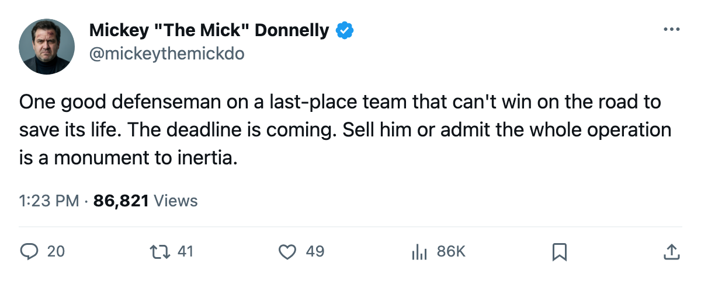
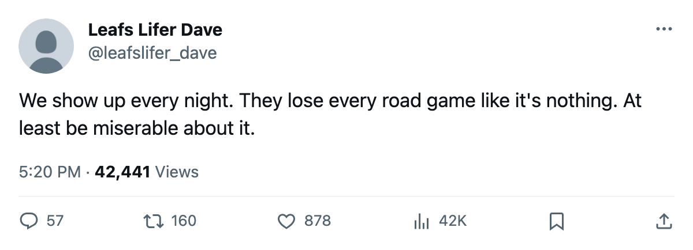

8 AND 24 ON THE ROAD. NOT ONE TOP-30 SCORER. $21.19 MILLION IN THE TILL. THE DEADLINE IS 15 DAYS AWAY.
Montreal is the worst team in hockey. They have one good defenseman. The calendar says 15 days.
 Mickey "The Mick" DonnellyColumnist, ex-goalie · The Penalty Box
Mickey "The Mick" DonnellyColumnist, ex-goalie · The Penalty Box
The  Montreal Canadiens Canadiens are 8-24 on the road. Thirty-two games away from their own building, twenty-four of them losses, and a 51-point season that leaves them dead last in this league. They lost their fourth straight this week and the goal differential in the last stretch says they are getting outscored regularly and nobody in that organization has stopped it.
Montreal Canadiens Canadiens are 8-24 on the road. Thirty-two games away from their own building, twenty-four of them losses, and a 51-point season that leaves them dead last in this league. They lost their fourth straight this week and the goal differential in the last stretch says they are getting outscored regularly and nobody in that organization has stopped it.
Not one Canadiens player appears in the Bureau's top 30 in scoring. Not one. Sixty-six games played and the highest-scoring man in that sweater does not crack the list of the 30 best point producers in hockey. In this league, 30 clubs, hundreds of skaters logging regular minutes, and Montreal cannot field a single name worth a line on that page.
The only player on the roster moving in the right direction on the Bureau's Development Index is Mike Komisarek81, the 23-year-old defenseman, up 6 spots, sitting at 80 overall with 70 points in 66 games. That is the entire upside. One man on a team with nothing else going forward.
The room sits at 87.8. That is the 6th-worst club morale in hockey. These guys are 16 and 38 and they are not upset enough about it to even be the saddest room in the league.
THE MONEY IS FINE. THE HOCKEY IS NOT.
A $45.26M payroll throwing off $21.19M in profit tells you the spending is not the problem. Cost-per-point sits at $0.89M, 26th in the league. Revenue is $70.95M, 8th in hockey. 15,527 people at $77 a seat keep the lights on. The operation works. The hockey does not.
Fifteen days until what the calendar has as the trade deadline. Montreal has 51 points and no postseason path. There is no reason in hockey to keep a defenseman up 6 on the Index at age 23 with 70 points if your club goes 8-24 on the road. Every contender in this league needs a puck-moving defenseman and none of them can find one in March at 80 overall.
If the Canadiens do not move Komisarek before the deadline, the only thing being built is a larger excuse for next October. The front office gets to say "trust the process" and the fans at the Bell Centre keep buying the tickets and the 8-24 becomes 9-25 and nobody in that building has to answer for anything.
The room won't notice. It is only the 6th saddest in hockey.

